🚌 Viaje a Trujillo 2
Ruta del viaje de estudios iniciando desde el Terminal Tetsur Jaén, recorriendo lugares históricos, culturales y turísticos de Trujillo.
🚌 Terminal Tetsur Jaén

Aquí nos encontramos con mis compañeros antes de iniciar el viaje. Había mucha emoción porque por fin comenzábamos nuestro recorrido hacia Trujillo.

Desde el terminal salimos de Jaén rumbo a Trujillo. Durante el viaje estuvimos conversando y esperando con entusiasmo llegar a nuestro destino.
🏫 Instituto de Educación Superior Público "Trujillo"
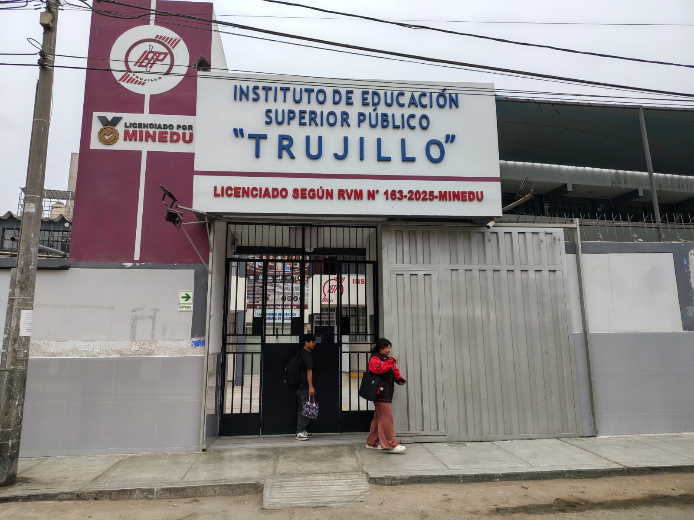
En este instituto nos recibieron para que pudiéramos tomar nuestro desayuno antes de seguir con las visitas programadas.
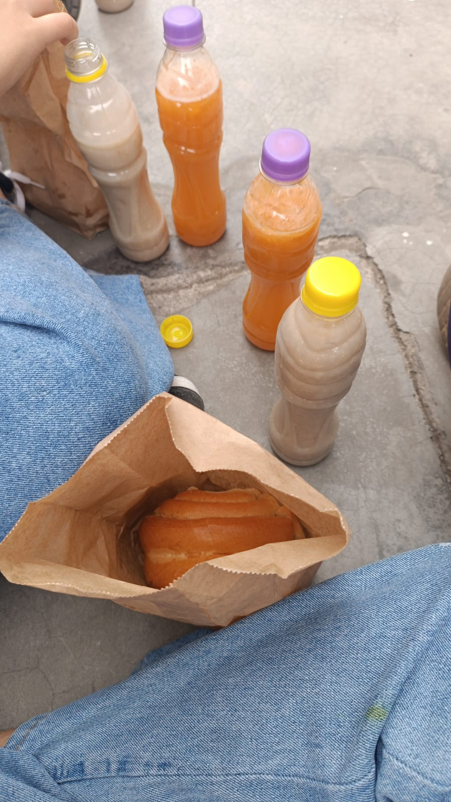
Nos dieron un pan relleno con tortilla de huevo y hotdog, una botella de avena y otra de jugo de papaya. Desayunamos juntos y luego continuamos con nuestro recorrido.
🏛 Museo Santiago Uceda Castillo

En el museo observé diferentes piezas y objetos que me ayudaron a conocer un poco más sobre la historia y la arqueología de Trujillo.
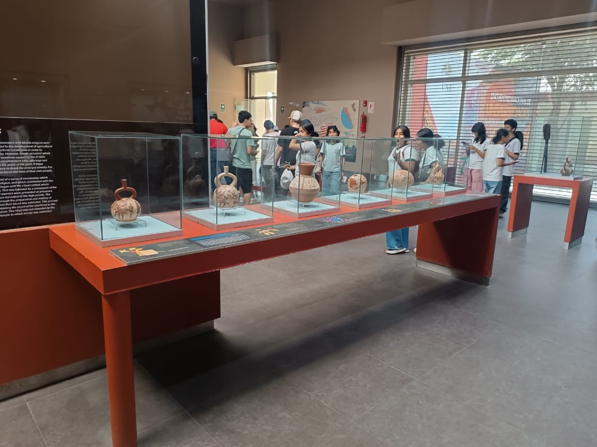
Durante la visita aprendí varios datos sobre las culturas que habitaron esta zona. Fue interesante poder ver de cerca algunas de las piezas que había estudiado anteriormente.
🌙 Huaca de la Luna

En la Huaca de la Luna pude observar los restos y decoraciones que dejaron los mochicas. Me pareció interesante conocer más sobre esta cultura durante el recorrido.

Lo que más me gustó fueron los murales y relieves que todavía se pueden apreciar. Verlos directamente hizo que la visita fuera mucho más interesante.
🏨 Hotel
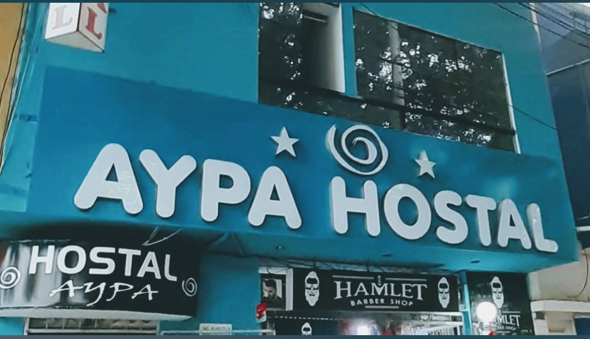
En el hotel nos instalamos y tuvimos un momento para descansar después de las actividades del día. También aprovechamos para compartir un rato entre compañeros.
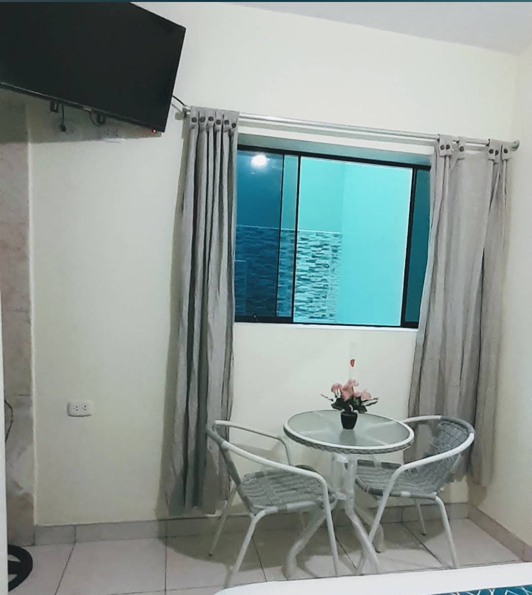
Después de un día lleno de visitas, este fue nuestro espacio para descansar y recuperar energías para las siguientes actividades.
⛪ Catedral Basílica de Santa María
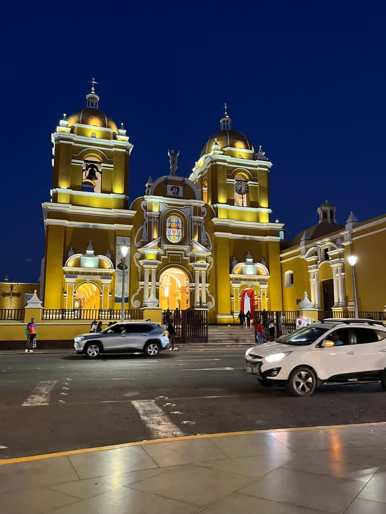
En la Catedral Basílica de Santa María pude apreciar su arquitectura y conocer un lugar importante de la historia religiosa de Trujillo.
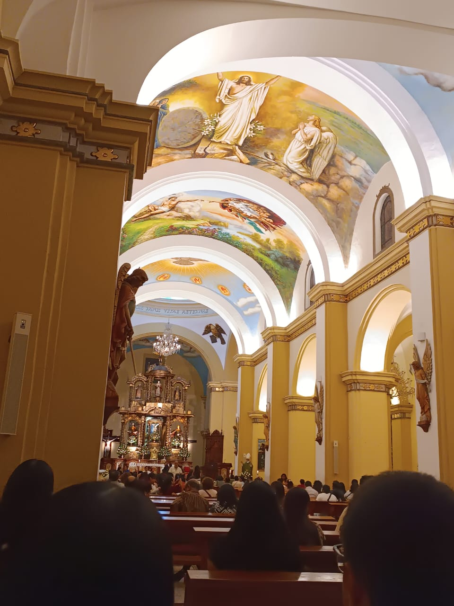
Durante la visita observé sus diferentes detalles y aproveché para tomar fotografías como recuerdo de nuestro recorrido.
🏛 Plaza de Armas de Trujillo

En la Plaza de Armas conocí uno de los espacios más representativos de Trujillo. Me gustó observar los edificios y el ambiente del centro de la ciudad.

Pudimos caminar por la plaza, tomarnos algunas fotografías y observar los monumentos y construcciones que la rodean.
🛍 Mall Plaza Trujillo

En el Mall Plaza Trujillo tuvimos un momento más libre para recorrer sus instalaciones y conocer las diferentes tiendas y espacios del lugar.
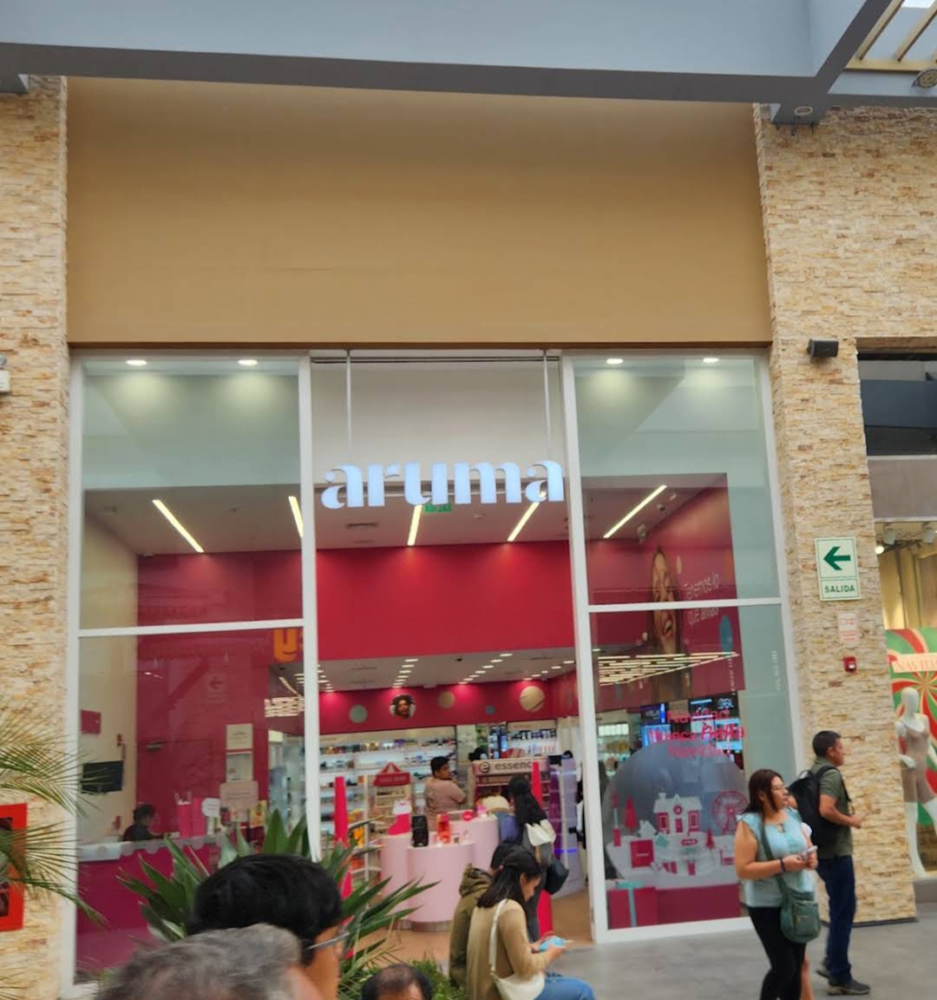
Aprovechamos la visita para caminar, mirar algunas tiendas y pasar un momento agradable con mis compañeros.
🏨 Hotel
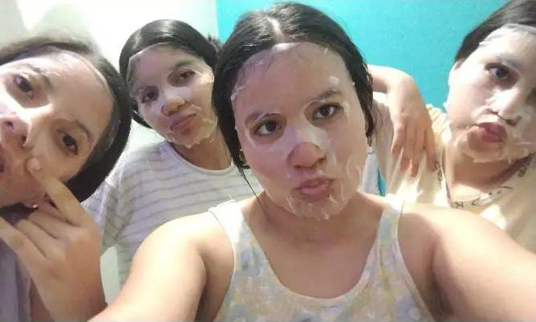
Al finalizar las actividades regresamos al hotel para descansar y pasar la noche antes de continuar con el viaje.

Después de descansar, quedamos listos para seguir con las visitas que teníamos programadas para el siguiente día.
🏛 Museo de Sitio de Chan Chan
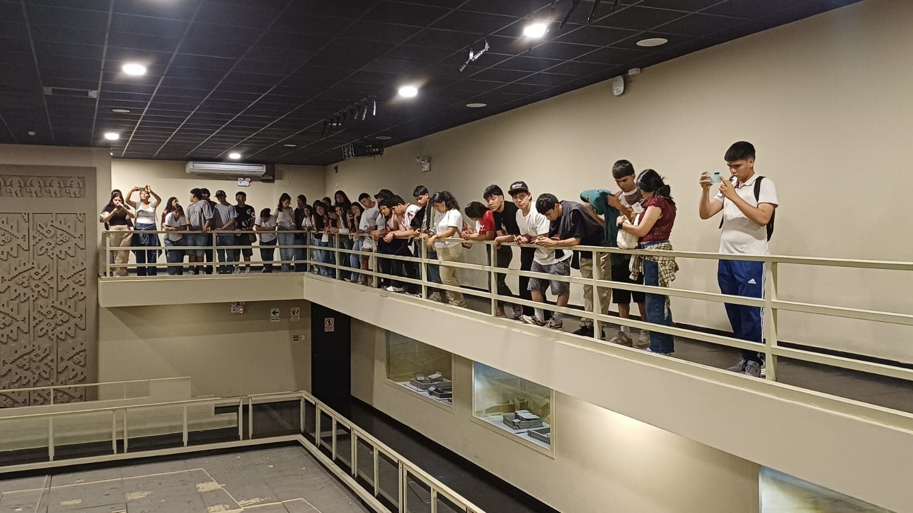
En el Museo de Sitio de Chan Chan conocí más sobre la cultura Chimú y pude observar objetos que forman parte de su historia.

La visita me permitió aprender sobre las costumbres, la organización y la forma de vida de los antiguos habitantes de Chan Chan.
🏜 Chan Chan

Al recorrer Chan Chan pude ver sus enormes construcciones de adobe y conocer parte de lo que fue esta antigua ciudad de la cultura Chimú.

Me sorprendió ver lo grandes que son sus muros y los diseños que todavía se conservan. Fue una de las visitas que más me permitió conocer sobre nuestro patrimonio.
🌊 Playa de Huanchaco
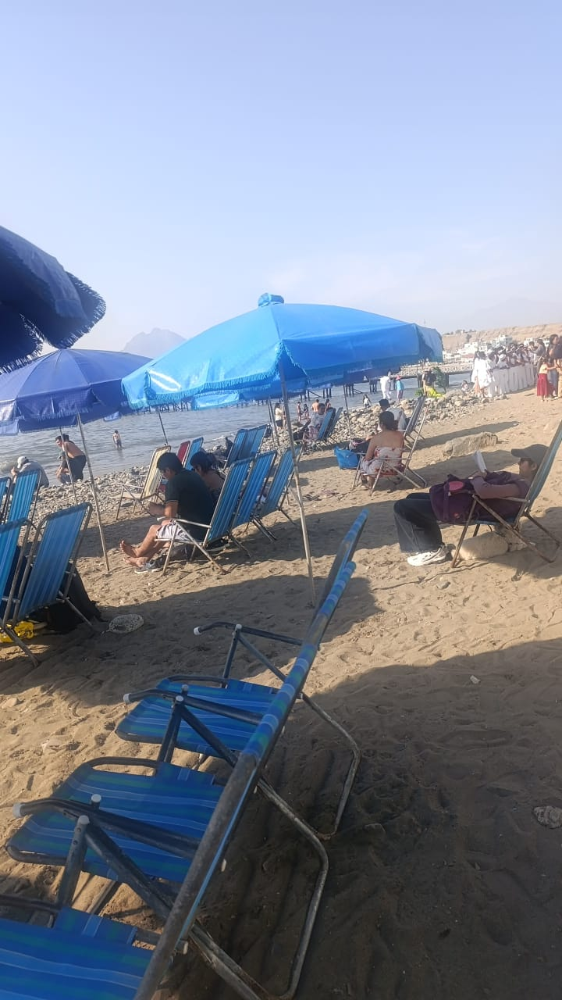
En Huanchaco disfruté del paisaje de la costa y pude conocer más sobre la tradición de los caballitos de totora, que son parte de la identidad del lugar.
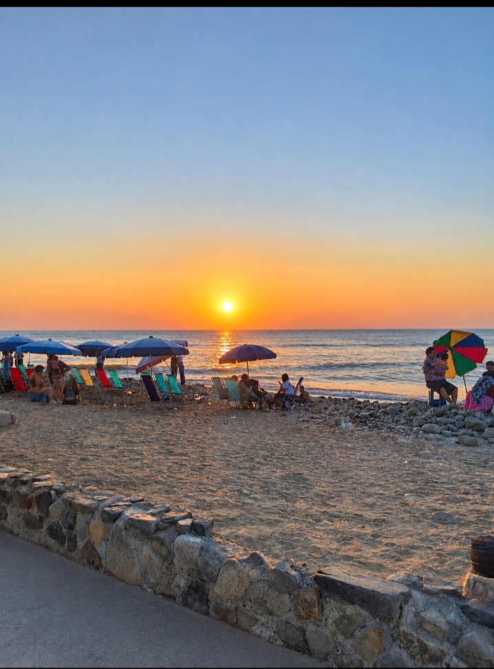
Me gustó caminar por los alrededores de la playa y disfrutar del paisaje. Fue una bonita manera de terminar nuestro recorrido por Trujillo.